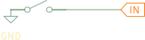
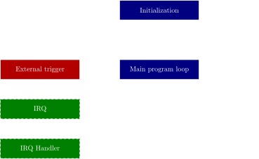
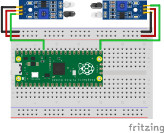
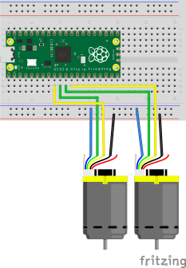
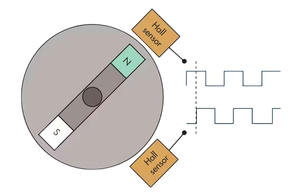
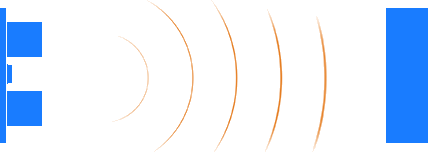
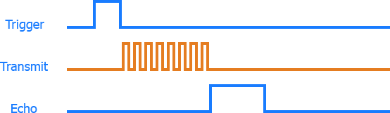
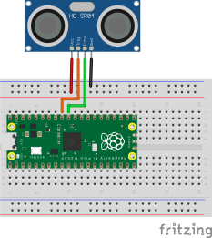
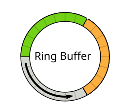

Robotika 3. óra
2025
Pause button

Újabb ⚡ kitérő

Újabb ⚡ kitérő

Feladat:
- Fusson le valamilyen kód amikor megnyomjuk a gombot
IRQ
IRQ

IRQ handler
add_irq(button.pin, true, []() { toggle(); });
IRQ handler
add_irq(button.pin, true, []() { toggle(); });
elég zajos, ezt így nem lehet használni...
IRQ handler
add_irq(button.pin, true, []() {
uint64_t now = time_us_64();
if (now - last_pause_us ≥ BUTTON_DEBOUNCE_DELAY_US) {
last_pause_us = now;
toggle();
}
});
debouncing ✨
Proximity szenzor
Proximity szenzor

Proximity szenzor
add_irq(proxy.pin, false, []() { disable(); });
Enkóder
Enkóder

Enkóder

Ultra sensor
Ultra sensor

Ultra sensor

Ultra sensor

Ultra sensor
ultra_sensor.h
#pragma once
#include "config.h"
#include "pin.h"
#include "ring_buffer.h"
class UltraSensor {
static constexpr float METERS_PER_US = 0.000175f;
static constexpr float MIN_DIST = 0.02f;
static constexpr float MAX_DIST = 4.0f;
volatile uint64_t last_dist;
volatile bool inited;
public:
Pin trig;
Pin echo;
volatile uint64_t rise;
volatile uint64_t fall;
volatile uint64_t last_pulse;
UltraSensor(uint _trig, uint _echo);
void init();
void deinit();
float distance();
void callback_echo_rise();
void callback_echo_fall();
void timer_callback_trig_up();
void timer_callback_trig_down();
};
Ultra sensor
ultra_sensor.cpp
#include "ultra_sensor.h"
UltraSensor::UltraSensor(uint _trig, uint _echo)
: last_dist(0),
inited(false),
rolling_dist_sum(0),
trig(_trig),
echo(_echo, GPIO_IN),
rise(0),
fall(0),
last_pulse(0) {}
void UltraSensor::init() {
if (inited)
return;
inited = true;
trig.init();
echo.init();
}
void UltraSensor::deinit() {
if (!inited)
return;
inited = false;
trig.deinit();
echo.deinit();
}
float UltraSensor::distance() {
if (!inited)
return -1;
float dist;
if (rise > fall) {
dist = last_dist;
} else {
dist = (fall - rise) * METERS_PER_US;
last_dist = dist;
}
if (dist < MIN_DIST || dist > MAX_DIST)
return -1;
return dist;
}
void UltraSensor::callback_echo_rise() {
if (!inited)
return;
rise = time_us_64();
}
void UltraSensor::callback_echo_fall() {
if (!inited)
return;
fall = time_us_64();
}
void UltraSensor::timer_callback_trig_up() {
if (!inited)
return;
trig.set(1);
last_pulse = time_us_64();
}
void UltraSensor::timer_callback_trig_down() {
if (!inited)
return;
trig.set(0);
}
Ultra sensor
- kissé zajos... ki kéne simítani
- átlagoljuk
- de hogyan tároljuk a korábbiakat?
Buffer

Ring buffer

Ring buffer
Önálló munka: implementáció
Ring buffer
ultra_sensor.h
struct Datapoint {
uint64_t t;
float dist;
};
RingBuffer<Datapoint, ULTRA_BUFFER_SIZE> buffer;
float rolling_dist_sum;
Ring buffer
ultra_sensor.cpp
float UltraSensor::distance() {
if (!inited)
return -1;
float dist;
if (rise > fall) {
dist = last_dist;
} else {
dist = (fall - rise) * METERS_PER_US;
last_dist = dist;
}
if (dist < MIN_DIST || dist > MAX_DIST)
return -1;
rolling_dist_sum += dist;
buffer.push_back({ time_us_64(), dist });
return dist;
}
float UltraSensor::distance_smooth() {
distance();
uint64_t now = time_us_64();
while (!buffer.empty() && buffer.front().t + ULTRA_BUFFER_TIME_WINDOW_US < now) {
rolling_dist_sum -= buffer.front().dist;
buffer.pop_front();
}
if (buffer.empty()) {
return -1.0;
} else {
return rolling_dist_sum / buffer.size();
}
}